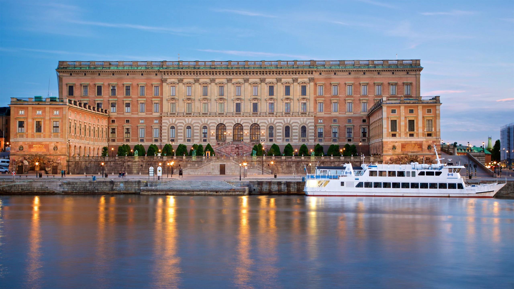
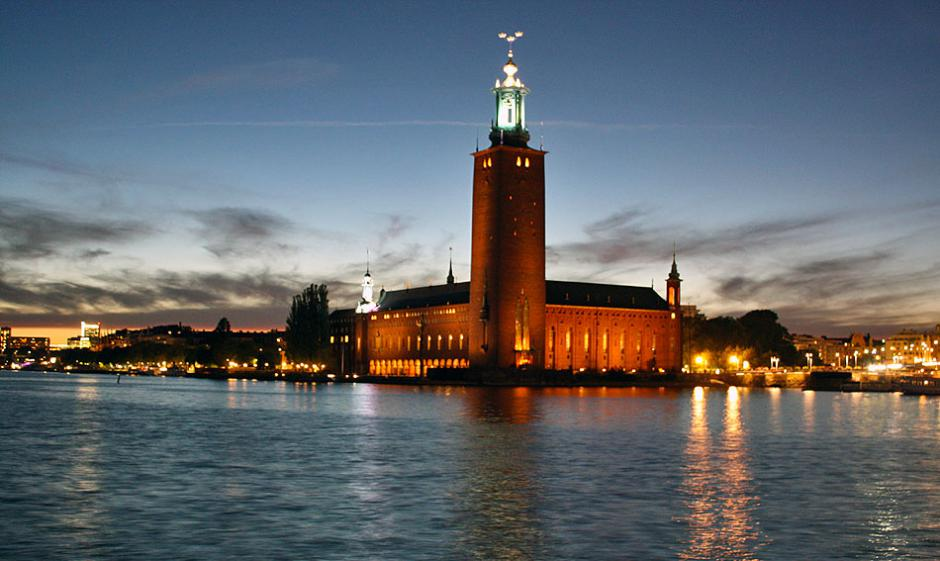
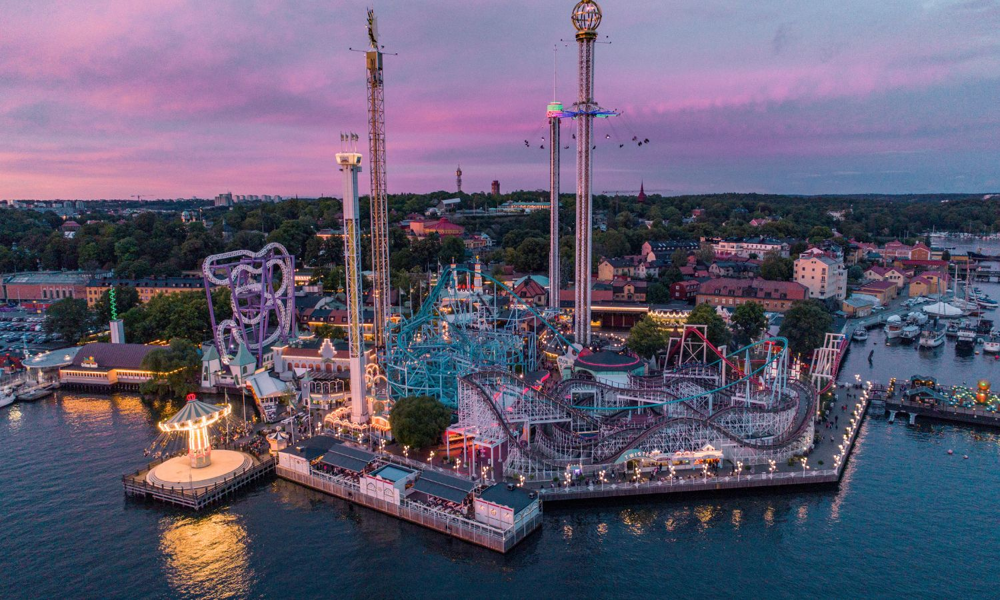
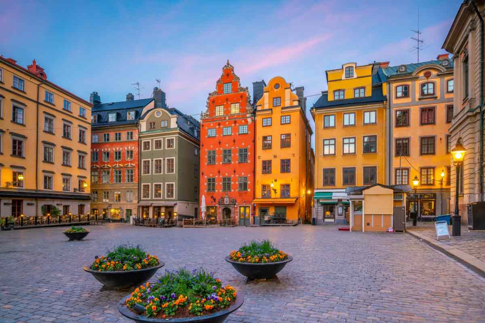
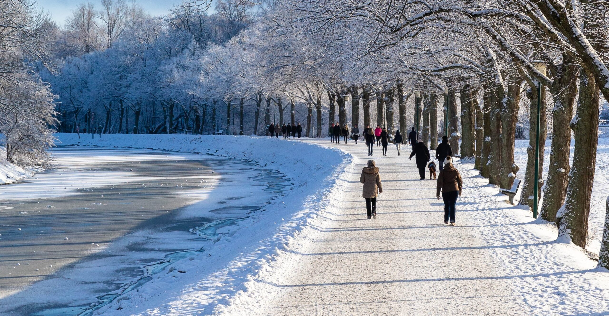
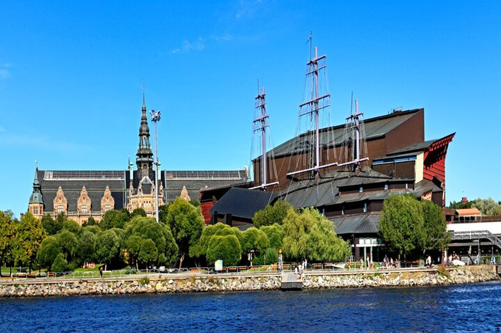

| Tourist Attractions | About | |
|---|---|---|
 The Royal Palace of Stockholm |
The Royal Palace is one of Europe's largest and most vibrant castles. The castle is the official residence of HM the King and essential parts of the monarchy's representation take place here, while large parts of the castle are open all year round. The ticket to visit the palace is 200kr but it is free to visit on June 6th which is the National Day of Sweden. | |
 City Hall |
The City Hall is one of Sweden’s most prominent examples of buildings constructed in the national romantic style. It has many remarkable decorations, several of which portray the history of Stockholm. Since its inauguration in 1923, the building has had several functions, both political and ceremonial. It is where the Stockholm City Council hold their meetings and where the Nobel Prize banquet takes place each year, on December 10th. | |
 Gröna Lund |
Gröna Lund is the oldest amusement park in Sweden and part of the Parks & Resorts Scandinavia theme park group, together with Kolmården, Furuvik and Skara Sommarland. Gröna Lund offers 30 rides, six restaurants, numerous lottery and pentathlon stalls, plus food and snack stands. Gröna Lund also offers a wide range of entertainment including concerts, dance evenings and children’s entertainment | |
 Gamla Stan |
Gamla Stan is an old section of Stockholm, the capital of Sweden. Gamla Stan consists of three islands, Stadsholmen, Riddarholmen and Helgeandsholmen. The main buildings such as the National Assembly Building, the royal palace and the Cathedral are located here. Gamla Stan whose meaning is "Old Town" is known to be built first in 13th century. Thus, there are a lot of old buildings in Gamla Stan and they were built in 17th or 18th century. They have very long history. After crossing the bridge in front of Royal Swedish Opera theater, there is the National Assembly Building. This building is the entrance of Gamla Stan and connects the old town, Gamla Stan, and the new town. The royal palace is just after the entrance and there are a lot of buildings which make you feel like in middle ages. | |
 Djurgården |
Djurgården or,more officially, Kungliga Djurgården (Swedish for 'The [Royal] Game Park'), is an island in central Stockholm, Sweden. Djurgården is home to historical buildings and monuments, museums, galleries, the amusement park Gröna Lund, the open-air museum Skansen, the small residential area Djurgårdsstaden, yacht harbours, and extensive stretches of forest and meadows. It is one of the Stockholmers' favorite recreation areas and tourist destinations alike, attracting over 10 million visitors per year, of which some 5 million come to visit the museums and amusement park. | |
 Vasa Museum |
The Vasa Museum is one of Scandinavia's most visited museums. It is here that you will find in all its glory, the unique and well preserved warship Vasa from 1628, embellished with hundreds of wooden sculptures. | |
| Have a happy exploring time in Stockholm :) | ||